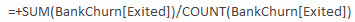
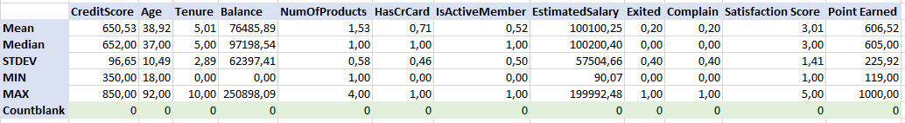
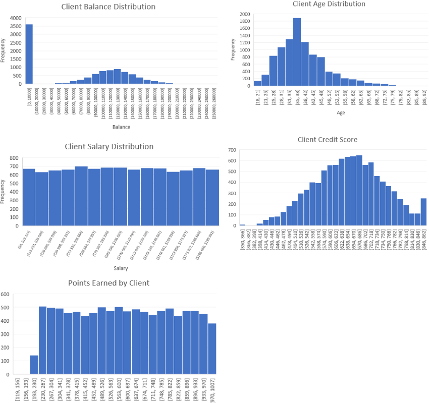
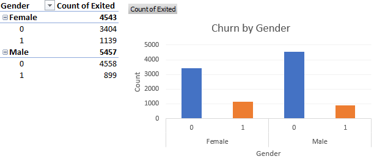
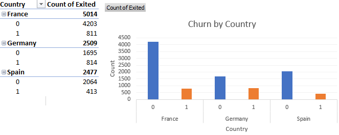
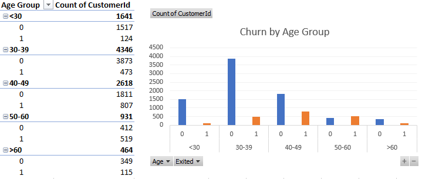
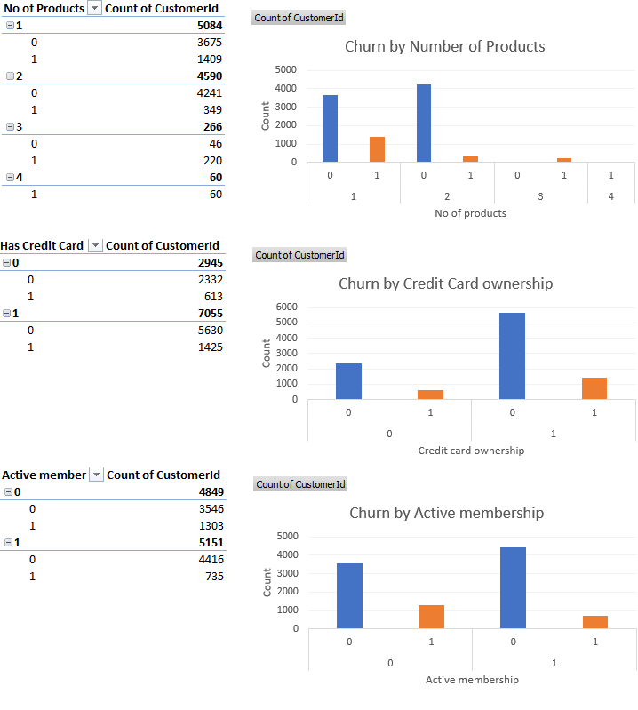
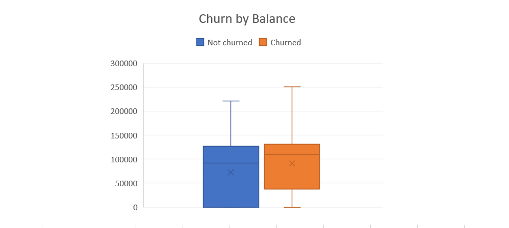

Bank churn analysis project in Excel
Churn analysis is the evaluation of a company's customer loss rate in order to reduce it. As we know, it is much more expensive to sign in a new client than keeping an existing one. Therefore, in this project, I will analyze behaviour of clients who churned and I will get some insights in order to help the bank improve client retention strategies, decrease churn rate and keep existing clients. This dataset is downloaded from Kaggle, and whole project will be done in MS Excel. Dataset has 10 000 values and 18 columns. Data is inspected, and there is no need for any cleaning before actual calculations.
Columns explained
RowNumber: corresponds to the record (row) number and has no effect on the output.
CustomerId: contains random values and has no effect on customer leaving the bank.
Surname: the surname of a customer has no impact on their decision to leave the bank.
CreditScore: can have an effect on customer churn, since a customer with a higher credit score is less likely to leave the bank.
Geography: a customer’s location can affect their decision to leave the bank.
Gender: it’s interesting to explore whether gender plays a role in a customer leaving the bank.
Age: this is certainly relevant, since older customers are less likely to leave their bank than younger ones.
Tenure: refers to the number of years that the customer has been a client of the bank. Normally, older clients are more loyal and less likely to leave a bank.
Balance: also a very good indicator of customer churn, as people with a higher balance in their accounts are less likely to leave the bank compared to those with lower balances.
NumOfProducts: refers to the number of products that a customer has purchased through the bank.
HasCrCard: denotes whether or not a customer has a credit card. This column is also relevant, since people with a credit card are less likely to leave the bank.
IsActiveMember: active customers are less likely to leave the bank.
EstimatedSalary: as with balance, people with lower salaries are more likely to leave the bank compared to those with higher salaries.
Exited: whether or not the customer left the bank.
Complain: customer has complaint or not.
Satisfaction Score: Score provided by the customer for their complaint resolution.
Card Type: type of card hold by the customer.
Points Earned: the points earned by the customer for using credit card.
Calculating bank churn rate
In Excel, I created table "BankChurn" in order to better organize and analyze my data. I calculated first total churn rate in the bank, using basic Excel formulas SUM and COUNT:

Churn rate equals 20,4%,
which is basically considered as an average churn rate for a bank, according to article from Akkio.
Performing statistical calculations
Next step is to perform basic statistical calculations on numeric columns inside our dataset, in order to get better acquainted with the data. I calculated average, median, standard deviation, minimum and maximum value, and counted blank cells.
It is clear that dataset does not have blank values. Columns "Balance" and "Estimated Salary" have the highest variation between minimum and maximum values. Largest difference between mean and median has column "Balance". Median is higher than mean, therefore distribution is left-skewed (negative).
Histograms of continous variables
By looking at these histograms, we can see that most of the variables are well balanced, like the estimated salary it is clear that there is practically the same number of people for each salary range, as well as for Points Earned variable. These distributions are classified as uniform. On the other hand, histograms of Age and Credit Score shows normal distribution. Most clients are between 25 and 48 years old, and credit score of most clients is between 510 and 782 points. Balance variable shows that majority of clients do not have any balance in the bank, while those who have, mostly have between 80 000 and 160 000 euros (normally distributed).
Creating pivot tables and graphs
I created few pivot tables in order to draw graphs from them, to compare categorical variables with my target variable. I made calculations with regards to gender, country, age, ownership of credit card, satisfaction score, card type.
Churn rate by gender is following:
Female: 25,1%
Male: 16,5%
This means that the churn rate for female clients is higher, compared to male clients.

Churn rate by country is following:
France: 16,2%
Germany: 32,4%
Spain: 16,7%
This shows that highest churn rate is in Germany, followed by Spain and France.

I have classified age of clients into 5 groups inside Pivot table. Churn rate by age group:
Under 30: 7,6%
30-39: 10,9%
40-49: 30,8%
50-60: 55,7%
Above 60: 24,8%
This indicates that the highest churn rate is observed in the age group 50-60, followed by 40-50 age group.
Lowest churn rate is spotted under 30 age group.
In order to get better picture, I performed three additional analysis, with regards to number of products, credit card ownership and active membership.

The number of products held by clients can impact churn. Clients with fewer products are less likely to churn,
while those with more products tend to churn more. Further analysis would be required to understand specific relationship.
Having a credit card does not seem to have significant impact. Clients with active membership ten to have lower churn rate compared to
inactive members. This tells us that active clients are more likely to stay with the bank.
Lastly, I created Box&Whisker chart for showing balance distribution among clients who churned versus retained clients.

The distribution of client's balances does not show a clear difference between churned and retained clients.
Further analysis and feature engineering may be required to explore the relationship between balance and churn in more detail.